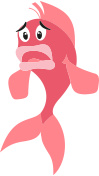
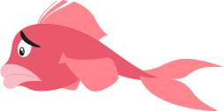
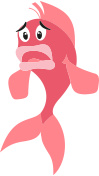
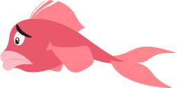

La naissance d'un TFA en 5 semaines
Le commencement
Tout à commencé le vendredi 5 avril, la veille des vacances de Pâques, au B99 de l’HEAJ… Après l’annonce de notre TFA, nous nous lançons, en groupe, dans la recherche et le partage de sujets. Avant cela, j’avais déjà mon idée de TFA sur le Zéro Déchet et bien que d’autres sujets proposés m’intéressaient, aucun ne me passionnait autant ou me parraissait aussi utile que celui-là. Divertir, c’est bien, informer c’est encore mieux et sensibiliser, c’est ce que je veux !
Le vrai commencement
Après avoir réfléchi à mon projet pendant le congé et fait valider mon sujet, je me sens comme perdue dans la nature. Je suis effrayée par la montagne de travail qui m’attend, rassembler les informations est difficiles vu qu’elles sont éparpillées partout. J’ai alors décidé de me concentrer sur une source et j’ai lu le livre de Béa Johnson (puis plus tard celui de Jérémie Pichon). Je commence à y voir plus clair ! C’était le premier weekend de mai et c’est là que j’ai vraiment commencé, plus le temps de chaumer !
Un logo, des couleurs, des plans et des notes
Ma première idée de logo, c’était une planète avec de la végétation qui jaillit et le nom à l’intérieur, un univers graphique qui me tentait beaucoup. Puis, v’la t’y pas qu’on me dit que ce n’est pas original, que tous les logos écolos sont verts et qu’on me suggère l’idée d’un poisson. J’y réfléchis et j’approuve l’idée, en plus, ça me fera une mascotte et je pourrai bien placer de la végétation ailleurs ! Je partirai donc sur le rouge (pour le poisson) et le bleu (pour l’océan) comme couleurs principales et ça tombe bien, j’ai trouvé un visuel de végétation dans ces tons là et du quel je vais partir. Pour les poissons, j’ai fait appel à ma gentille soeur qui m’a fait des croquis que j’ai ensuite décalqués sur Illustrator car le dessin, c’est moins mon truc. Contenu, je ne suis pas encore très loin, pour le moment, je prends des notes et je verrai bien ce que j'en ferai.
 



Un peu de contenu, un peu de design
Rédiger le texte, c’est quelque chose qui m’ennuie et me demande beaucoup de temps. Du coup, je n’attends pas d’avoir fini cette partie pour me mettre au design (ni au code d’ailleurs), je fais un peu les deux en même temps ou à tour de rôle. Je commence par designer ma page de présentation pour desktop, plutôt facilement et j’en suis assez contente. Me voilà une base de design pour tout mon site et je peux enfin m’imaginer à quoi il ressemblera. Réaliser les illustrations est quelque chose qui m’amuse mais qui me demande également du temps, je n’ai donc pas concrétisé l’idée de rajouter des poissons morts et des plantes mortes, ce sera peut-être pour plus tard.
Le code, plus compliqué que prévu
Je me lance dans le code à la fin de la deuxième semaine, en commençant par la page de présentation. Jusque là, tout se passe bien. La troisième semaine commence, et après avoir bien avancé sur le design de mon site, je passe au code et c’est là que les difficultés commencent. Je l’avais pas encore mentionné mais perdue comme j’étais en JavaScrip, j’essaye de me mettre à jour et depuis le commencement, je lis de la théorie en parallèle. Cela m’aide à beaucoup mieux comprendre, mais une fois dans la pratique, c’est toujours la galère. Déjà, je pensais pouvoir faire une base de données pour mes astuces et recettes, mais en fait non. J’ai réussi à faire mes pop-up en reprenant un exemple dans mon super livre et c’était déjà une grande victoire ! J’ai dû abandonner mon idée de wishlist après avoir essayé, le temps avançant dangereusement vite, mais après tout, pour le moment ce n’est aucunement utile à mon site vu que j’ai très peu de données.
Mon projet ne s’achève pas ici
J’ai bien entendu l’intention de faire évoluer ce projet. Il y a plusieurs choses que je voudrais particulièrement améliorer quand j’en aurai les compétences ou le temps :
- Utiliser une base de données ;
- Ajouter des astuces et des recettes ;
- Ajouter des photos dans les pop-up ;
- Remplacer les photos libres de droits par mes propres photos ;
- Rendre le système de favoris fonctionnel ;
- Ajouter des filtres pour les données ;
- Ajouter des animations et transitions de page .
Ce que j’en retire
J’ai beaucoup aimé réaliser ce projet, malgré mes phases de découragement et d’incertitude, et je suis contente du résultat. C’est la première fois que je fais un site aussi coloré et j'ai réalisé plus d'illustrations que d'habitude. J’ai réussi à plutôt bien gérer mon temps en m’y mettant bien à l’avance et en me fixant des objectifs. Je me rends également mieux compte de mon niveau, je constate que j’ai bien progressé au cours de l’année, ainsi que pendant ces 5 semaines, que ce soit en design ou en code mais que j’ai encore pas mal de lacunes.